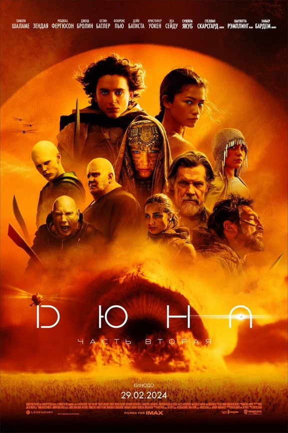
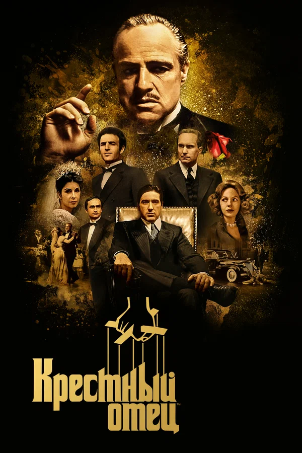
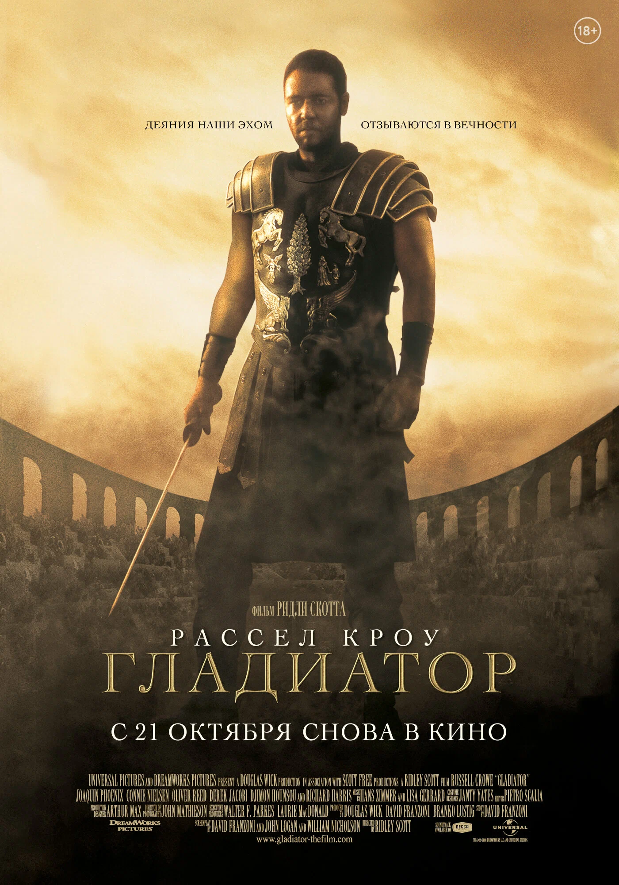

Новинки кинопроката
Дюна: Часть вторая (2024)
Герцог Пол Атрейдес присоединяется к фрименам, чтобы стать Муад Дибом, одновременно пытаясь остановить наступление войны.
Конклав (2024)
После внезапной смерти Папы кардиналы готовятся к конклаву — выборам нового главы католической церкви. Руководство и организацию процедуры поручают кардиналу Лоуренсу. Вскоре он узнаёт несколько не самых приятных тайн о главных кандидатах на место Папы, а это может кардинально повлиять на результат выборов и пошатнуть основы церкви.
Классика кино
Крёстный отец (1972)
Легендарная криминальная драма Фрэнсиса Форда Копполы о семье Корлеоне. Мастерский актерский состав во главе с Марлоном Брандо и Аль Пачино.
Гладиатор (2000)
Отважный генерал, ставший рабом, мстит империи. Культовая историческая драма Ридли Скотта с пятью «Оскарами».